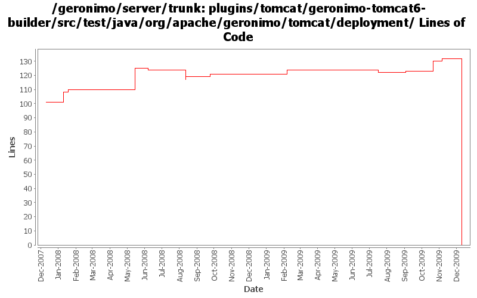

[root]/plugins/tomcat/geronimo-tomcat6-builder/src/test/java/org/apache/geronimo/tomcat/deployment

| Author | Changes | Lines of Code | Lines per Change |
|---|---|---|---|
| Totals | 29 (100.0%) | 208 (100.0%) | 7.1 |
| rickmcguire | 3 (10.3%) | 110 (52.9%) | 36.6 |
| djencks | 17 (58.6%) | 81 (38.9%) | 4.7 |
| gawor | 1 (3.4%) | 15 (7.2%) | 15.0 |
| genspring | 1 (3.4%) | 2 (1.0%) | 2.0 |
| xuhaihong | 3 (10.3%) | 0 (0.0%) | 0.0 |
| gdamour | 4 (13.8%) | 0 (0.0%) | 0.0 |
GERONIMO-4980 Use Tomcat 7 in Geronimo 3.0
0 lines of code changed in 3 files:
test failure cleanup
3 lines of code changed in 1 file:
some castor dependency cleanup
2 lines of code changed in 1 file:
Initial tomcat conversion work
105 lines of code changed in 1 file:
GERONIMO-4742 Connector portlets for Tomcat does not work
1, Added ConnectorWrapperGBeanStarter.java to start connector GBeans for connectors defined in server.xml.
2, Added TomcatServerConfigManager.java to use DOM to read/write connectors from server.xml.
3, Modified other classes to make this happen.
2 lines of code changed in 1 file:
GERONIMO-4766 fix compilation error side effect
1 lines of code changed in 1 file:
GERONIMO-4752 rewrite toomcat security to support jaspic and better support jacc
0 lines of code changed in 1 file:
GERONIMO-4684 Provide a way for the existing EngineGBean to wrap the engine started from a server.xml. This should provide backward compatibility for added gbeans in user plans
1 lines of code changed in 1 file:
GERONIMO-4684, GERONIMO-4685 Use our tomcat build, configure tomcat using server.xml. Also includes some spec jar updates including using our jaxb spec jar
2 lines of code changed in 1 file:
GERONIMO-4553 Make web use of security realms depend on plugin visibility; make console expose the 'global' attribute for configuration (renamed from 'publish'). Also merges in geronimo-security changes from sandbox branches.
12 lines of code changed in 1 file:
GERONIMO-4531, GERONIMO-4523 Simplify builder collections. Make security principal-role mappings independent of the application
44 lines of code changed in 2 files:
GERONIMO-4258 clean up some naming constant usage
4 lines of code changed in 4 files:
GERONIMO-3149 Some gbeans to support jaspi components and a little bit of reorganization
2 lines of code changed in 1 file:
GERONIMO-4236 remove obsolete geronimo-timer implementation
4 lines of code changed in 1 file:
GERONIMO-4109 reverse host-engine relationship direction for non-default hosts
0 lines of code changed in 1 file:
make sure security and persistence elements get reordered correctly (GERONIMO-3944)
15 lines of code changed in 1 file:
GERONIMO-3758 put the default jacc provider implementation classes in a separate package
4 lines of code changed in 1 file:
GERONIMO-3742 Split up namespace upgrades into the modules that need them
7 lines of code changed in 2 files:
Add support for the clustering of Tomcat Web-applications over WADI. The change
replicates the same projects and design than for the clustering of Jetty
Web-applications over WADI.
A couple of things specific to Tomcat: we insert a Valve in front of all the
Valves, even the Geronimo before after one, in order to hook-in the traversal
of the WADI Contextualiser stack prior to enter the web-application.
This fixes GERONIMO-3696 - Tomcat Clustering over WADI
0 lines of code changed in 4 files: